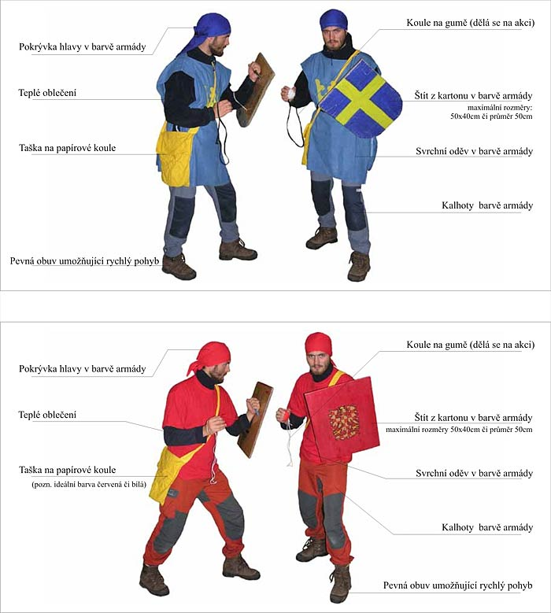

Moravská armáda bojuje v šatech v kombinaci krvavé a sněhové barvy, švédská armáda v barvách slunce a nebe.
Oděv ti nesmí bránit ve volném pohybu, ani příliš plandat, protože zásah do vlajícího oděvu se dle pravidel považuje za platný. Doporučujeme ti vyrobit si např. pončo s opaskem.
Oděv můžeš také vyzdobit výsostnými znaky své armády.
Inspirace (vrchní obrázek znázorňuje ideál oblékání švédského vojáka, spodní ideál oblékání moravského vojáka):
